Chapter 8. 레드 블랙 트리(Red-Black Tree)¶
0절. 개요
1절. 레드 블랙 트리
2절. 삽입
3절. 삭제
4절. 코드 구현
0절. 개요¶
Red - Black 트리¶
| 조건 |
|---|
| 모든 노드는 블랙 or 레드 노드 |
| 루트 노드는 블랙 |
| 리프 노드(NIL)는 블랙 |
| 레드 노드 자식은 블랙 노드 |
| 루트 노드 -> 리프 노드 경로의 블랙 노드 수는 동일 |
1절. 레드 블랙 트리¶
레드 블랙 트리 구현¶
- NIL 노드 처리
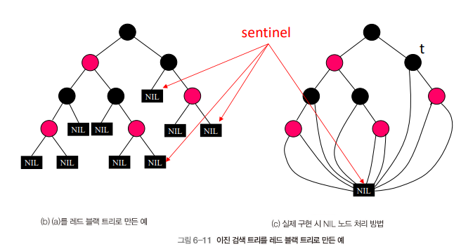
레드 블랙 트리 요구사항¶
- 각 노드는 색 저장을 위한 한 비트의 저장소 필요
- 가장 긴 PATH(root에서 가장 먼 NIL)의 길이는 가장 짧은 PATH(root에서 가장 가까운 NIL)의 길이 2배를 넘지 못함
가장 짧은 PATH : 모든 블랙 노드
가장 긴 PATH : 레드 노드와 블랙 노드가 번갈아 나옴
동작¶
- 레드 블랙 트리의 특성이 깨질 수 있는 동작의 경우 회전(rotation)을 통한 레드 블랙 트리 특성 유지 필요
- 공간 복잡도 : \(O(n)\)
| 종류 | rotation 여부 | 수행 시간 |
|---|---|---|
| 검색(Search) | X | \(O(log n)\) |
| 삽입(Insert) | O | \(O(log n)\) |
| 삭제(Delete) | O | \(O(log n)\) |
회전(Rotation)¶
- 서브 트리 위치 조정으로 트리 구조 변경
- 키의 순서에 영향 X
- 목표 : 트리 높이 감소
- 최대 높이 : \(O(log\) \(n)\)
- 큰 서브 트리 : 위
- 작은 서브 트리 : 아래
레드 블랙 트리 간 관계¶
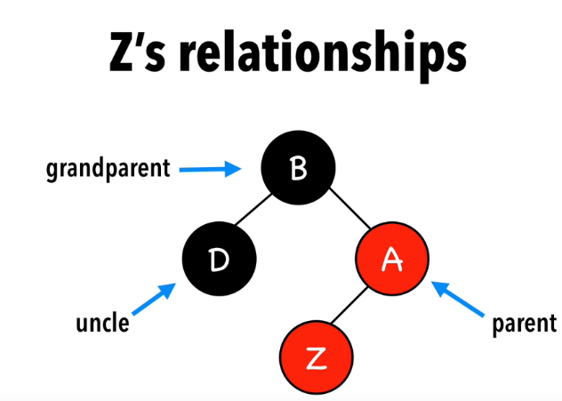
- Z 노드 기준 관계
- Parent
- Uncle
- Grandparent
2절. 삽입¶
삽입 전략(Insert Strategy)¶
| 전략 |
|---|
| 노드 삽입 시 레드 노드 |
| 규칙 위반 시 노드 색상 변경(Recoloring) or 회전(Rotation) |
삽입 시나리오¶
| 시나리오 종류 | 설명 |
|---|---|
| Z = root | 노드가 루트 노드인 경우 |
| Z.uncle = red | 노드.uncle이 레드 노드인 경우 |
| Z.uncle = black(Triangle) | 노드.uncle이 블랙 노드이며 Triangle 형태인 경우 |
| Z.uncle = black(Line) | 노드.uncle이 블랙 노드이며 Line 형태인 경우 |
Z = root¶
- 삽입된 Z는 레드 노드
- Z를 블랙 노드로 교체
Z.uncle = red¶
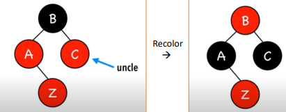
- 삽입된 Z는 레드 노드
- Z의 Parent, Uncle, Grandparent 모두 Recoloring
- Parent : red -> black
- Uncle : red -> black
- Grandparent : black -> red
Z.uncle = black(Triangle)¶
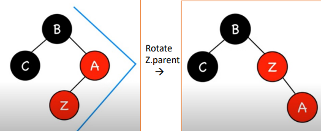
- 삽입된 Z는 레드 노드
- Z의 Parent와 Rotation
Z.uncle black(Line)¶
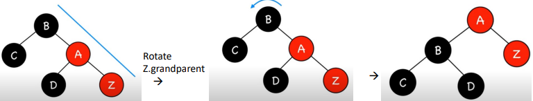 |
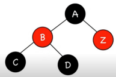 |
|---|---|
- 삽입된 Z는 레드 노드
- Z의 Parent 기준 Rotation
- Z의 Parent, Uncle 모두 Recoloring
- Parent : red -> black
- Uncle : black -> red
시나리오 결과 요약¶
| 시나리오 종류 | 결과 |
|---|---|
| Z = root | Color Black |
| Z.uncle = red | Recoloring |
| Z.uncle = black(Triangle) | Rotate Z.parent |
| Z.uncle = black(Line) | Rotate Z.grandparent & recolor |
ex 1 : 기본 삽입¶
- 15, 5, 1 삽입
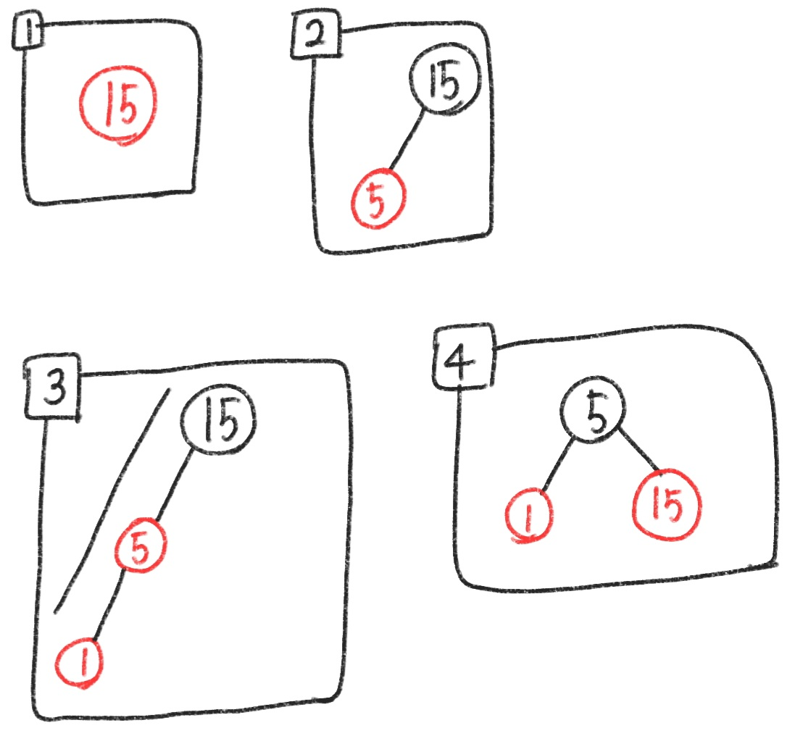
ex 2 : 심화 삽입 (1)¶
- 10 삽입
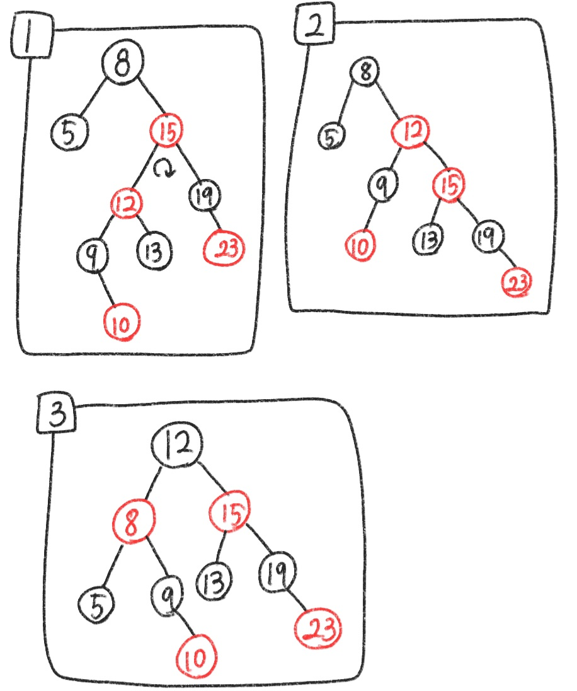
ex 3 : 심화 삽입 (2)¶
- 3, 1, 5, 7, 6, 8, 9, 10 순서의 삽입
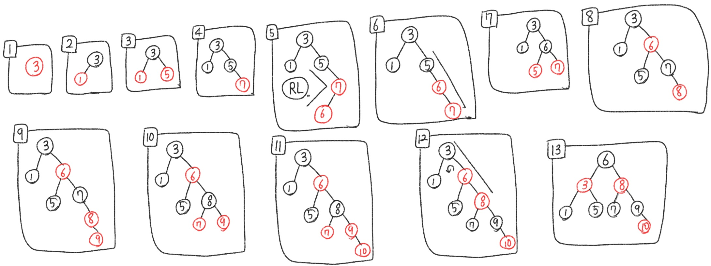
3절. 삭제¶
삭제 전략(Delete Strategy)¶
| 전략 |
|---|
| 노드 삭제 후 주변의 레드 블랙 특성 위반 여부 확인 |
| 두 개의 자식을 가진 노드 삭제 작업의 경우 자식이 없거나 하나인 노드의 삭제 작업으로 변환 |
단순 삭제¶
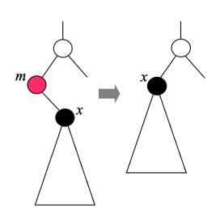
- 삭제 노드가 레드 노드인 경우
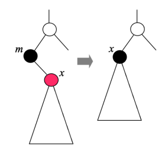
- 삭제 노드가 블랙 노드이면서 자식 노드가 레드 노드인 경우
심화 삭제¶
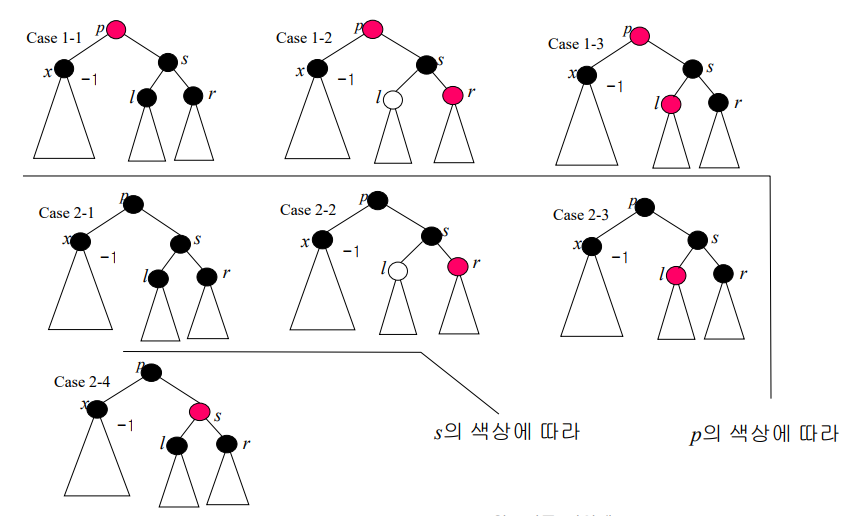
- 블랙 노드 제거 시 x에서 리프 노드로 이르는 블랙 노드의 수가 상이
- 레드 블랙 특성 위반 가능성 존재
심화 삭제 5가지¶
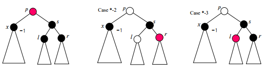 |
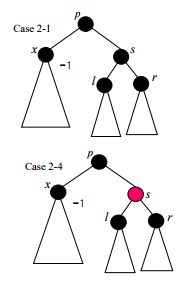 |
|---|---|
- 루트 노드가 레드 노드인 경우
- 루트 노드가 레드 / 블랙 노드 여부가 상관 없는 경우
- 루트 노드가 블랙 노드인 경우
루트 노드가 레드 노드인 경우¶
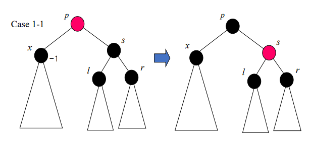
루트 노드가 레드 / 블랙 노드 여부가 상관 없는 경우¶
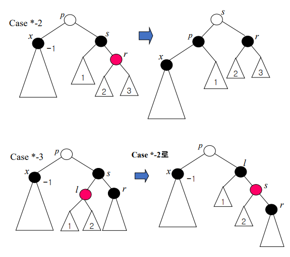
루트 노드가 레드 / 블랙 노드 여부가 상관 없는 경우¶
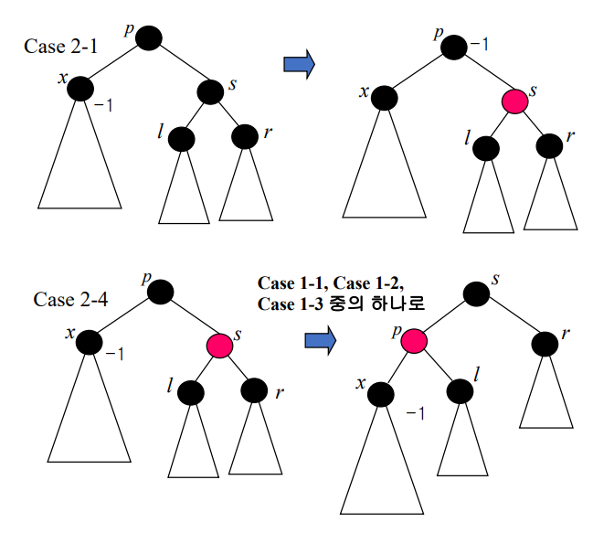